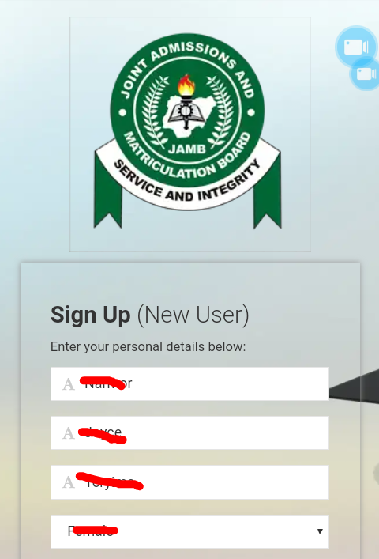

If you are wondering how to link your email to jamb portal you are on the right page. If you tried to link your email through SMS but can’t, don’t worry I will show you step by step how to link your email manually to jamb portal.
Note linking of email to jamb portal through SMS does not always work, that’s why most of the café operators out there will tell you to go jamb office or any accredited center to do that. But on this page you will learn also how to link it manually through their official portal.
JAMB registration does not require any candidate to provide his or her email address, that is, candidates were unable to link their email to jamb caps during registration. That means candidates needs to link their email address to jamb caps manually after registration.
The reason behind jamb banning candidates from registering jamb without their email address is to protect candidates’ email from fraudsters and hackers that steal this emails and use it to commit fraud. Though immediately after registration ends candidates can link their email to jamb portal either through SMS or manually through jamb efacility portal.
Why do I need an email address and password?
Most candidates must be wondering, why do I need to have an email address and password? The reason behind this is that this email address linked to your jamb portal alongside with your password allows you to have an access to your caps. That means without this email address and password you can’t accept or reject your admission on the jamb portal.
How to link your email to jamb caps.
Below are the steps to link your email address to jamb or caps.
How to link your email to jamb caps using sms.
Head to your SMS app on your mobile.
In your SMS app , type “Email” then leave (one space) then “your email” then (one space) then “your email” and send to 55019. E.g Email tbnat123@gmail.com tbnat123@gmail.com (Note: it must be in this format else you keep getting errors and it must be sent through the phone number you registered with jamb during your registration. Also, this service is charged at N50, so you must have at least N50 on your registered phone).
If the above steps are done currently, an email will be sent to your provided email containing your login details like password in this format (candb15ec1).
Login to your email and get your password so that you can login to your jamb caps.
(create account with a valid email address because all vital information will be sent to you to your email, yahoo mails are not encouraged due to delay in delivery. Also use your registered phone number in the phone number field).
Click on “verify e-mail” to link your email to jamb portal.
A verification link is sent to your email.
Login to your email and click on the link or use the code in your email.
Fill in the information on the sign up page.

Click on sign up to link your email to jamb portal.
Your email is linked, login to your email and get your password.
Is there any deadline to linking your email to jamb portal?
Some candidates ask, is there any deadline to linking of email to jamb portal? There is no deadline to linking of your email to jamb portal, however, it is advisable to do so before jamb starts giving admission so that you can have access to your caps and accept or reject the admission given to you by jamb.
Conclusion
Linking of email to jamb portal is very important for admission processing because without this you cannot gain admission to your preferred/any tertiary institution that accept jamb. In other words, you cannot gain admission without accepting your admission offer by jamb.